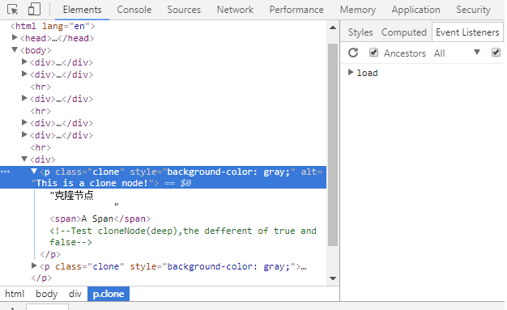

cloneNode()方法将为给定节点创建一个副本。这个方法的返回值是一个指向该副本节点的引用指针：
reference=elem.cloneNode(deep);这个方法只有一个布尔类型的参数，它的可取值只能是true 或者 false。这个参数决定着是否要把被复制节点的字节点也一同复制到新建节点里去。
当cloneNode()的参数为true时，新节点将包含着与被复制节点完全一样的子节点.
reference=elem.cloneNode(true);克隆节点 A Span
在上图中我将一个class为clone的p节点进行了克隆并将cloneNode()的参数取值为true。克隆完成后的节点是一个只存在JS上下文中的孤儿节点，于是我将它插入到原来节点之上。可以发现这两个节点是完全一样的。
在我的猜测中，我认为原节点上所绑定的Event Listeners也应该同样被克隆到新节点上去，然而事实并非如此！
我在原节点上绑定了一个onclick事件，点击后将改变该元素的背景颜色。
而克隆节点却没有这个onclick事件。

当cloneNode()的参数为false时，新节点将不包含任何子节点——如果被复制节点是一个元素节点，那么被复制的节点的所有文本将不会被复制，因为文本也是一个子节点，但该元素节点的属性节点将被复制。
reference=elem.cloneNode(false);克隆节点 A Span
在上图中我将一个class为clone的p节点进行了克隆并将cloneNode()的参数取值为false。克隆完成后的节点是一个只存在JS上下文中的孤儿节点，于是我将它插入到原来节点之上。
从两个节点的信息中可以看出，克隆的节点是一个只有属性节点的空节点，它没有任何的子节点。也就是说，当cloneNode()参数为false时，克隆出的新节点只包含了该元素节点的属性，但是它的子节点并没有被复制。
cloneNode()的两个参数的区别在于目标节点的子节点是否被复制。不过无论参数是什么，cloneNode()方法都会将目标节点的属性节点克隆下来，但是不会对节点的监听器起到作用，若想让新节点添加上与原节点相同的监听器，cloneNode()方法是无法实现的。